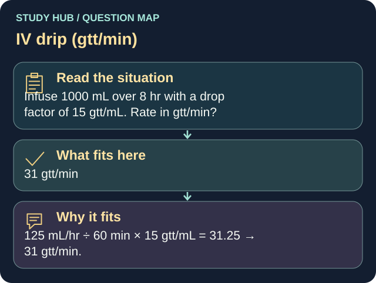

Infuse 1000 mL over 8 hr with a drop factor of 15 gtt/mL. Rate in gtt/min?
Answer
31 gtt/min
Reasoning
125 mL/hr ÷ 60 min × 15 gtt/mL = 31.25 → 31 gtt/min.
Why the other answers do not fit
- 21 gtt/min
125 mL/hr ÷ 60 min × 15 gtt/mL = 31.25 → 31 gtt/min.
- 42 gtt/min
125 mL/hr ÷ 60 min × 15 gtt/mL = 31.25 → 31 gtt/min.
- 15 gtt/min
125 mL/hr ÷ 60 min × 15 gtt/mL = 31.25 → 31 gtt/min.
